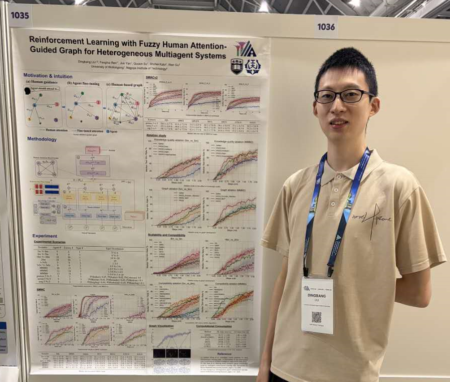

Refereed Publications (Google Scholar)
Please see my Google Scholar for Full Publication List.
2026
|
AAAI'2026

|
Reinforcement Learning with Fuzzy Human Attention-Guided Graph for Heterogeneous Multiagent Systems Dingbang Liu, Fenghui Ren, Jun Yan, Guoxin Su, Shohei Kato and Wen Gu In AAAI'26 (CCF-A, Core A*), to appear. Acceptance rate: 13.5% (4167/30948). |
| IEEE T-CYB |
Fuzzy Knowledge-Based Hierarchical Reinforcement Learning for Large-Scale Heterogeneous Multiagent Systems
[PDF] Dingbang Liu, Fenghui Ren, Jun Yan, Guoxin Su, Wen Gu and Shohei Kato In IEEE Transactions on Cybernetics (JCR Q1, Core A). |
| JAAMAS |
Improving Scalability of Multi-Agent Deep Reinforcement Learning with Suboptimal Human Knowledge
[PDF] Dingbang Liu, Fenghui Ren, Jun Yan, Guoxin Su, Wen Gu and Shohei Kato In Journal of Autonomous Agents and Multi-Agent Systems (JCR Q2, Core A). |
2025
| KBS |
Human Attention Guided Multiagent Hierarchical Reinforcement Learning for Heterogeneous Agents
[PDF] Dingbang Liu, Fenghui Ren, Jun Yan, Guoxin Su, Shohei Kato, Wen Gu and Minjie Zhang In Knowledge-Based Systems (JCR Q1, Core B). |
2024
| NeurIPS'2024 |
Integrating Suboptimal Human Knowledge with Hierarchical Reinforcement Learning for Large-Scale Multiagent Systems
[PDF] Dingbang Liu, Shohei Kato, Wen Gu, Fenghui Ren, Jun Yan and Guoxin Su In NeurIPS'2024 (CCF-A, Core A*), to appear. Acceptance rate: 25.8% (4037/15671). |
| IEEE ACCESS |
Scaling Up Multi-Agent Reinforcement Learning: An Extensive Survey on Scalability Issues
[PDF] Dingbang Liu, Fenghui Ren, Jun Yan, Guoxin Su, Wen Gu, and Shohei Kato In IEEE Access (JCR Q2)(Citations 32). |